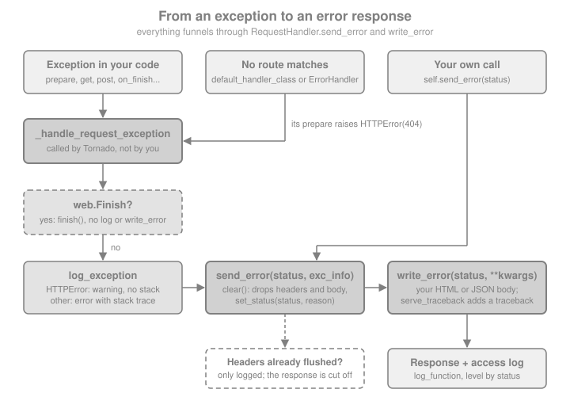

Error Handling
|
This content was generated with the assistance of AI and should be verified against the official documentation before being relied on in production. |
This page is written against Tornado 6.5.10 on Python 3.13, checked on 2026-10-07. Tornado 6.6 is only available as an
alpha (6.6a1) at the time of writing, so everything described as "6.6" below is upcoming and may still change. Every
example was executed with those versions, through real servers bound to a loopback port or through
AsyncHTTPTestCase. The running example is the Bookshelf Live scenario: a JSON API for books whose clients need
predictable error bodies, whose operators need useful logs, and whose users must never see a stack trace.
Tornado has no exception-handler registry like Flask’s @app.errorhandler or FastAPI’s @app.exception_handler.
Error handling is built from a handful of methods on RequestHandler, which you override, and two exception classes,
HTTPError and Finish, which you raise. The whole mechanism fits on one page: an uncaught exception is logged by
log_exception, converted into a status code, and rendered by write_error. Everything else (custom 404 pages, JSON
errors, debug tracebacks) is a variation of overriding those methods. For the same topic in other frameworks see
Flask: Error Handling (a registry of handlers chosen by exception class) and
FastAPI: Status Codes & Error Handling. The handler
lifecycle, the settings table and routing are covered in Applications & Request Handlers and Routing;
the coroutine side of failures (un-awaited tasks, gen.multi) is in
Coroutines & asyncio.
The Error Pipeline
When a handler method raises, Tornado catches the exception in the request machinery (_handle_request_exception, an
internal method you do not call) and takes one of three paths, shown in the figure:
-
web.Finish: the request ends without an error response, without a log line and without callingwrite_error. -
Any other exception is passed to
RequestHandler.log_exception, and then toRequestHandler.send_error. AnHTTPErrorkeeps its own status code; everything else becomes 500. -
send_error(status_code, **kwargs)discards whatever was already written (clear()), sets the status line and callswrite_error, passing the exception askwargs["exc_info"], a(type, value, traceback)triple. Ifwrite_erroritself raises, that is logged and the response is finished anyway.

Two consequences are worth remembering. First, the error body is produced by a method on the handler, so it can use
everything a handler can (self.render, self.write, headers, self.settings). Second, requests that never reach
one of your handlers (no route matches, a malformed request rejected by the HTTP server) bypass your handler classes,
so a custom error format needs extra wiring for those cases, covered in Custom 404 Pages with default_handler_class.
Raising HTTPError
tornado.web.HTTPError(status_code=500, log_message=None, *args, **kwargs) is the exception that turns into an HTTP
error response. Raising it is the idiomatic alternative to calling send_error, because it also stops the handler
method. Its parameters:
| Parameter | Meaning |
|---|---|
|
The HTTP status. It must be a standard code known to |
|
A message for the log, with optional |
|
Keyword-only. The reason phrase of the status line (the "Not Found" in |
The page body is the part people get wrong: the default error page shows the status code and the reason phrase and
nothing else. The log_message goes to the logs only. The next example raises HTTPError with a log message, with a
custom status and reason, and lets a handler lack a method to see the automatic 405. The probe helper starts a server
on a free loopback port, performs the requests and returns the responses, and a logging handler captures what Tornado
logs so that it can be printed.
import asyncio
import logging
from tornado import httpclient, httpserver, netutil, web
from tornado.escape import json_decode
class Capture(logging.Handler):
"""Collect Tornado's log records so the examples can print them."""
def __init__(self):
super().__init__()
self.lines = []
def emit(self, record):
self.lines.append(f"{record.name} {record.levelname}: {record.getMessage().splitlines()[0]}")
captured = Capture()
tornado_log = logging.getLogger("tornado")
tornado_log.addHandler(captured)
tornado_log.propagate = False
tornado_log.setLevel(logging.INFO)
async def probe(app, *requests):
"""Serve app on a free loopback port, send the requests, return the responses."""
server = httpserver.HTTPServer(app)
sockets = netutil.bind_sockets(0, "127.0.0.1")
server.add_sockets(sockets)
base = f"http://127.0.0.1:{sockets[0].getsockname()[1]}"
client = httpclient.AsyncHTTPClient()
results = []
try:
for request in requests:
method, path, options = request if isinstance(request, tuple) else ("GET", request, {})
if method in ("POST", "PUT", "PATCH") and "body" not in options:
options = {**options, "body": ""}
results.append(await client.fetch(base + path, method=method, raise_error=False, **options))
finally:
server.stop()
await server.close_all_connections()
return results
def show(response):
body = response.body.decode(errors="replace").strip()
print(response.code, response.reason, "|", response.headers.get("Content-Type"), "|", body[:100])
BOOKS = {1: "Dune"}
class BookHandler(web.RequestHandler):
def get(self, book_id):
title = BOOKS.get(int(book_id))
if title is None:
raise web.HTTPError(404, "book %s not found", book_id) # log_message, not shown to the user
self.write({"id": int(book_id), "title": title})
def delete(self, book_id):
raise web.HTTPError(471, "shelf is locked", reason="Shelf Locked") # non-standard code needs reason
app = web.Application([(r"/books/(\d+)", BookHandler)])
requests = ["/books/1", "/books/9", ("DELETE", "/books/1", {}), ("POST", "/books/1", {}), "/nope"]
for response in asyncio.run(probe(app, *requests)):
show(response)
print(*captured.lines, sep="\n")
captured.lines.clear()Source: Tornado: tornado.web.HTTPError
Output (the millisecond figures vary):
200 OK | application/json; charset=UTF-8 | {"id": 1, "title": "Dune"}
404 Not Found | text/html; charset=UTF-8 | <html><title>404: Not Found</title><body>404: Not Found</body></html>
471 Shelf Locked | text/html; charset=UTF-8 | <html><title>471: Shelf Locked</title><body>471: Shelf Locked</body></html>
405 Method Not Allowed | text/html; charset=UTF-8 | <html><title>405: Method Not Allowed</title><body>405: Method Not Allowed</body></html>
404 Not Found | text/html; charset=UTF-8 | <html><title>404: Not Found</title><body>404: Not Found</body></html>
tornado.access INFO: 200 GET /books/1 (127.0.0.1) 1.53ms
tornado.general WARNING: 404 GET /books/9 (127.0.0.1): book 9 not found
tornado.access WARNING: 404 GET /books/9 (127.0.0.1) 0.95ms
tornado.general WARNING: 471 DELETE /books/1 (127.0.0.1): shelf is locked
tornado.access WARNING: 471 DELETE /books/1 (127.0.0.1) 0.40ms
tornado.access WARNING: 405 POST /books/1 (127.0.0.1) 0.69ms
tornado.access WARNING: 404 GET /nope (127.0.0.1) 0.60msNotes on that output. The log message (book 9 not found) appears only in the tornado.general warning. The 405 for
the unimplemented post and the 404 for /nope have no log message, so only the access log mentions them. Each request
produces an access-log line on tornado.access, whose level depends on the status: INFO below 400, WARNING for
4xx and ERROR for 5xx. A handler method that is not defined raises HTTPError(405) by itself, but Tornado does not
add an Allow header; Custom Error Bodies with write_error shows how to add it.
log_message, get_message and the 6.5 change
Before 6.5 code read error.log_message and error.args to build the log line. Since 6.5 both attributes are
deprecated and HTTPError.get_message() returns the message with the %-arguments already applied (or None).
Use it in custom log_exception implementations, as the logging section below does. A second 6.5 behaviour change:
when no extra arguments are given, a literal % in log_message is no longer doubled, which matches how the
standard logging module treats messages without arguments. The practical rule is the standard one for logging: pass
variable data as arguments (HTTPError(404, "book %s not found", book_id)), not by building the string with an f-string,
so a user-controlled value containing % cannot be misread as a format directive.
send_error and Early Returns
RequestHandler.send_error(status_code=500, **kwargs) produces an error response from the current handler without
raising. Keyword arguments are passed through to write_error (the exception case adds exc_info), and reason=
sets the status line phrase. Use it where raising is awkward, for example in a helper that cannot propagate an
exception, but remember that it does not stop the handler method: the code after the call keeps running. The
example below contains one handler that returns correctly and one that forgets to return.
class IsbnHandler(web.RequestHandler):
def get(self, isbn):
if len(isbn) != 13:
self.send_error(400, reason="Bad ISBN")
return # without this, the next line would still run
self.write({"isbn": isbn})
class ForgottenReturnHandler(web.RequestHandler):
def get(self, isbn):
self.send_error(400)
self.write({"isbn": isbn}) # the response is already finished: this raises RuntimeError
app = web.Application([(r"/isbn/(\w+)", IsbnHandler), (r"/bug/(\w+)", ForgottenReturnHandler)])
for response in asyncio.run(probe(app, "/isbn/123", "/isbn/9780441172719", "/bug/1")):
show(response)
print(*captured.lines, sep="\n")
captured.lines.clear()The first request answers 400 Bad ISBN, the second succeeds and the third still answers a clean 400 Bad Request,
but the log shows tornado.application ERROR: Uncaught exception GET /bug/1, because the stray write raised after the
response was finished. The client never sees the bug, which is exactly why it survives in code reviews: prefer
raise HTTPError(...), and when you call send_error write return on the next line.
Custom Error Bodies with write_error
write_error(status_code, **kwargs) is the single place that builds the body of every error response from a handler.
The default implementation writes a tiny HTML page with the code and the reason phrase (escaped), or, when the
serve_traceback setting is true and an exception is available, a text/plain traceback. Override it, usually in a
base class that all your handlers share, to produce JSON, an HTML template or a localised page. The overridden method
may call write, render, set_header and the rest, and must finish the response itself (finish()), because
send_error only finishes a response that write_error left open. If it raises, Tornado logs
Uncaught exception in write_error and sends whatever was set up.
For a JSON API the best shape is RFC 9457 Problem Details (the successor of RFC 7807): an object with type,
title, status and optionally detail, served as application/problem+json. The example defines an ApiError
subclass of HTTPError whose detail is safe for clients (unlike log_message, which is for operators), a base
handler that renders problems, and a handler that triggers each case.
import secrets
class ApiError(web.HTTPError):
"""An HTTPError whose detail is safe to show to API clients."""
def __init__(self, status_code, detail, **kwargs):
super().__init__(status_code, detail, **kwargs) # the detail doubles as the log message
self.detail = detail
class ApiHandler(web.RequestHandler):
def write_error(self, status_code, **kwargs):
exc = kwargs["exc_info"][1] if "exc_info" in kwargs else None
problem = {"type": "about:blank", "title": self._reason, "status": status_code}
if isinstance(exc, ApiError):
problem["detail"] = exc.detail
elif isinstance(exc, web.MissingArgumentError):
problem["detail"] = f"Missing argument {exc.arg_name}"
if status_code == 405:
# Tornado does not add Allow: list the methods this class really implements
allowed = [m for m in self.SUPPORTED_METHODS
if getattr(type(self), m.lower()) is not getattr(web.RequestHandler, m.lower())]
self.set_header("Allow", ", ".join(allowed))
if self.settings.get("serve_traceback") and exc is not None:
problem["exception"] = repr(exc) # debugging aid, never in production
self.write(problem) # write() of a dict sets application/json...
self.set_header("Content-Type", "application/problem+json") # ...so override it afterwards
self.finish()
class ShelfHandler(ApiHandler):
BOOKS = {"1": "Dune"}
def get(self, book_id):
page = self.get_query_argument("page") # raises MissingArgumentError (400) if absent
if book_id == "boom":
raise RuntimeError("database password is hunter2") # an unexpected bug: must not leak
if book_id not in self.BOOKS:
raise ApiError(404, f"No book with id {book_id}")
self.write({"id": book_id, "page": page})
app = web.Application([(r"/books/(\w+)", ShelfHandler)])
requests = ["/books/1?page=2", "/books/7?page=1", "/books/1", "/books/boom?page=1", ("POST", "/books/1", {})]
for response in asyncio.run(probe(app, *requests)):
show(response)
if response.code == 405:
print("Allow:", response.headers["Allow"])
print(*captured.lines, sep="\n")
captured.lines.clear()Output:
200 OK | application/json; charset=UTF-8 | {"id": "1", "page": "2"}
404 Not Found | application/problem+json | {"type": "about:blank", "title": "Not Found", "status": 404, "detail": "No book with id 7"}
400 Bad Request | application/problem+json | {"type": "about:blank", "title": "Bad Request", "status": 400, "detail": "Missing argument page"}
500 Internal Server Error | application/problem+json | {"type": "about:blank", "title": "Internal Server Error", "status": 500}
405 Method Not Allowed | application/problem+json | {"type": "about:blank", "title": "Method Not Allowed", "status": 405}
Allow: GET
tornado.access INFO: 200 GET /books/1?page=2 (127.0.0.1) 5.10ms
tornado.general WARNING: 404 GET /books/7?page=1 (127.0.0.1): No book with id 7
tornado.access WARNING: 404 GET /books/7?page=1 (127.0.0.1) 78.86ms
tornado.general WARNING: 400 GET /books/1 (127.0.0.1): Missing argument page
tornado.access WARNING: 400 GET /books/1 (127.0.0.1) 0.42ms
tornado.application ERROR: Uncaught exception GET /books/boom?page=1 (127.0.0.1)
tornado.access ERROR: 500 GET /books/boom?page=1 (127.0.0.1) 0.57ms
tornado.access WARNING: 405 POST /books/1 (127.0.0.1) 0.43msPoints to take from it:
-
kwargs["exc_info"]is present only when the error came from an exception. A directsend_error(404)call has noexc_info, so the code must test for it. The exception is not necessarily "current", sosys.exc_info()andtraceback.format_exc()insidewrite_errorare unreliable: use the triple. -
self._reasonis the reason phrase thatsend_errorset (it is a private-looking attribute that the default implementation itself uses).self.get_status()is the public way to read the code. -
MissingArgumentErroris a subclass ofHTTPErrorraised byget_argumentand its siblings when an argument without a default is absent. Because it is anHTTPErrorit gives a 400 and no stack trace, andarg_nameholds the name. -
The unexpected
RuntimeErrorproduced a 500 with a generic body: the message mentioning a password stayed in the logs (with a stack trace ontornado.application) and never reached the client. Never putstr(exc)of an unexpected exception in a response. -
self.write(dict)always setsContent-Type: application/json; charset=UTF-8, so a different JSON media type such asapplication/problem+jsonmust be set after thewritecall, as in the example. -
HTTPError.log_messageis a log message, not a response message. The default pages ignore it; awrite_errorthat prints it makes users see internal wording and, if you interpolate user input into it, risks injecting markup into an HTML page, so escape (tornado.escape.xhtml_escape) anything user-controlled that you render in HTML.
A common refinement is content negotiation inside write_error: return the Problem Details object when the request
sends Accept: application/json (or the path starts with /api/) and an HTML template otherwise, so one handler base
class serves both the browser and the API clients.
Status codes the framework raises by itself
| Situation | Result |
|---|---|
|
|
Handler lacks the method for the HTTP verb |
|
Verb not in |
|
No route matches |
|
Missing or wrong XSRF token on a POST with |
|
Request line, headers or body rejected by |
The server answers directly (400, 413…) before any handler exists, so |
Any other uncaught exception |
500, logged on |
The last-but-one row is the reason the body format of errors cannot be fully controlled from handlers: protocol-level failures are produced by the HTTP server layer. If clients must never see Tornado’s own pages, put a reverse proxy in front (see Running & Deploying) and let it normalise those cases.
Custom 404 Pages with default_handler_class
When no route matches, Tornado builds a handler with tornado.web.ErrorHandler(status_code=404). That handler is a
RequestHandler that raises HTTPError from prepare, so it renders through the same write_error pipeline, but
with the base class’s default HTML page. To make unmatched routes look like the rest of your API, set the
default_handler_class setting (and optionally default_handler_args) to a handler of your own. Note that this
applies to every unmatched request, so a handler with a catch-all pattern in the route table is an alternative that
makes the 404 explicit; the setting is the neater way to cover all unknown paths and methods in one place.
class JsonNotFoundHandler(ApiHandler):
def prepare(self):
raise ApiError(404, f"No route for {self.request.path}")
app = web.Application([(r"/books/(\w+)", ShelfHandler)], default_handler_class=JsonNotFoundHandler)
for response in asyncio.run(probe(app, "/nowhere")):
show(response)
print(*captured.lines, sep="\n")
captured.lines.clear()Source: Tornado: Application settings
The response is 404 Not Found with an application/problem+json body mentioning /nowhere. Because the new
handler extends ApiHandler, it shares the error format and the logging with every other handler. The handler can
also use all the usual hooks, for example to redirect legacy URLs or to send a 410 Gone for removed paths.
Finish: Ending a Request Without an Error
tornado.web.Finish ends the request without producing an error response and without calling write_error or
logging. Whatever status, headers and body have been set are sent as they are; if Finish is given an argument, it is
passed to finish() (a dict becomes the JSON body). It is the clean way to short-circuit from deep inside a call
stack, in prepare or in a library function, where an authentication check wants to answer 401 with its own headers
and stop everything else.
class AdminHandler(web.RequestHandler):
def prepare(self):
if self.request.headers.get("Authorization") != "Bearer " + self.settings["admin_token"]:
self.set_status(401)
self.set_header("WWW-Authenticate", 'Bearer realm="bookshelf"')
raise web.Finish({"error": "authentication required"}) # no write_error, no log_exception
def get(self):
self.write({"ok": True})
# the token comes from the environment in a real deployment; here it is generated at start-up
app = web.Application([(r"/admin", AdminHandler)], admin_token=secrets.token_urlsafe(16))
for response in asyncio.run(probe(app, "/admin")):
show(response)
print(response.headers["WWW-Authenticate"])
print(*captured.lines, sep="\n")
captured.lines.clear()Source: Tornado: tornado.web.Finish
The client receives 401 Unauthorized with the challenge header and the JSON body, and the only log line is the
access-log warning: no tornado.general warning and no stack trace. Finish is the right tool for responses that are
protocol, not failure; HTTPError is the right tool when you want the error pipeline (the log line and
write_error). A common mistake is to use Finish for failures and then lose them from the logs.
Debug Mode and serve_traceback
The serve_traceback application setting makes the default write_error return a text/plain traceback instead of
the tiny HTML page, and is exposed to your own write_error through self.settings, as the Problem Details example
did. It is not a setting you should set by hand in production. debug=True turns on four settings at once, each of
which can still be overridden individually:
| Setting | Effect when debug=True |
|---|---|
|
Restart the process when a source file changes. |
|
Set to false: templates are recompiled on each render. |
|
Set to false: static-file hashes are recomputed. |
|
Set to true: error pages include the traceback. |
debug_app = web.Application([(r"/books/(\w+)", ShelfHandler)], serve_traceback=True)
response = asyncio.run(probe(debug_app, "/books/boom?page=1"))[0]
print(response.code, response.body.decode())
captured.lines.clear()
dbg = web.Application([], debug=True)
print({key: dbg.settings[key] for key in ("autoreload", "compiled_template_cache", "static_hash_cache", "serve_traceback")})With the setting on, the 500 response now carries "exception": "RuntimeError('database password is hunter2')", the
secret text the production version kept private, which is the whole argument against enabling it on a reachable
server. Tornado has no interactive in-browser debugger (no equivalent of Werkzeug’s), so debug mode is safer than
Flask’s in that respect, but a traceback still discloses file paths, library versions and data. Drive the setting
from an environment variable or a flag in main() and keep it off by default.
Logging Uncaught Exceptions
Tornado uses three standard-library loggers, all children of the tornado logger and with only WARNING and above
visible until your program configures logging (Tornado’s helper tornado.options.parse_command_line() and its
--logging option do that for the tornado loggers):
| Logger | What goes there |
|---|---|
|
One line per finished request, from |
|
Uncaught exceptions in handlers (with a stack trace and the request) and in callbacks. |
|
Everything else, including the warning for an |
The default RequestHandler.log_exception(typ, value, tb) logs an HTTPError as a warning without stack trace
(using value.get_message()) and everything else as an error with the stack trace. Override it in a base handler to
send unexpected errors to an error tracker, and call super() to keep the logging. To change the access log, pass a
log_function setting (a function receiving the handler) or override Application.log_request. The example
overrides both. reported stands in for the error-tracker client.
reported = []
class TrackedHandler(web.RequestHandler):
def log_exception(self, typ, value, tb):
if not isinstance(value, web.HTTPError): # expected errors are not bugs
reported.append(f"{typ.__name__}: {value}") # e.g. send to the error tracker here
super().log_exception(typ, value, tb)
def get(self):
raise ValueError("bad cover file")
def access_line(handler):
captured.lines.append(f"ACCESS {handler.get_status()} {handler.request.method} {handler.request.path}")
app = web.Application([(r"/t", TrackedHandler)], log_function=access_line)
asyncio.run(probe(app, "/t"))
print(reported)
print(*captured.lines, sep="\n")
captured.lines.clear()The result is ['ValueError: bad cover file'], the usual tornado.application ERROR: Uncaught exception GET /t
line (with the stack trace in the full record) and ACCESS 500 GET /t instead of the default access line.
Two cautions. The stack trace of the default error log includes repr(self.request), which includes headers, so
a Cookie or Authorization header can end up in a log file: restrict who can read the logs, or override
log_exception to scrub. And a log_function runs in the request path, so it must not block; ship structured logs
asynchronously, or write to stdout and let the platform collect them.
Errors After the Response Has Started
Once a handler has called flush(), the status line is on
the wire and an error response is impossible. send_error detects this, logs Cannot send error response after
headers written and just tries to finish the response. The client sees the status that was already sent and a
truncated body, with nothing signalling the failure, so streaming handlers must carry their own end-of-stream marker
(a final JSON line, a trailer event for SSE) to distinguish a complete response from a broken one.
class StreamHandler(web.RequestHandler):
async def get(self):
self.write("first chunk\n")
await self.flush() # the 200 status and headers are sent now
raise RuntimeError("failed half-way")
app = web.Application([(r"/stream", StreamHandler)])
response = asyncio.run(probe(app, "/stream"))[0]
show(response)
print(*captured.lines, sep="\n")
captured.lines.clear()Source: Tornado: RequestHandler.flush
The output is 200 OK with the body first chunk, and the logs hold the uncaught exception plus the
Cannot send error response after headers written message. The practical rule: do everything that can fail
(validation, authentication, the database read) before the first write + flush, so errors can still become proper
responses.
Errors Outside Handlers
Exceptions raised in code that is not a request handler method are not turned into HTTP responses; they are logged
by whoever runs that code. A coroutine started with IOLoop.spawn_callback has its exception logged on
tornado.application, as Exception in callback ..., and nobody else sees it; a task created with
asyncio.create_task that is never awaited reports it only when it is garbage collected. The Tornado pages
Coroutines & asyncio and Queues & Locks cover these patterns in depth. A background worker should therefore have its own
try / except around each unit of work, log with logging.exception and carry on, so one bad job cannot kill the
worker.
from tornado import ioloop
async def broken_cover_refresh():
raise KeyError("cover")
async def main():
ioloop.IOLoop.current().spawn_callback(broken_cover_refresh)
await asyncio.sleep(0.05) # give the callback a chance to run
asyncio.run(main())
print(captured.lines[0][:60])
captured.lines.clear()Source: Tornado: IOLoop.spawn_callback
The line printed starts with tornado.application ERROR: Exception in callback. The request that triggered the
background work has long since been answered, so the failure can be reported only through logs and metrics.
Testing Error Paths
AsyncHTTPTestCase.fetch() returns the response whatever the status (its raise_error defaults to false, unlike
AsyncHTTPClient.fetch), so error tests assert on response.code and the body. Expected log lines would otherwise
fill the test output, and could hide real problems, so wrap the request in tornado.testing.ExpectLog, which
suppresses a matching record and fails the test if it did not appear. When a test uses self.http_client.fetch
directly, a non-2xx response raises tornado.httpclient.HTTPError, a different class from tornado.web.HTTPError
(it has code and response, not status_code), so do not import both under the same name.
import unittest
from tornado.testing import AsyncHTTPTestCase, ExpectLog, gen_test
class ErrorPathTest(AsyncHTTPTestCase):
def get_app(self):
return web.Application([(r"/books/(\w+)", ShelfHandler)])
def test_missing_argument_is_400_problem(self):
with ExpectLog("tornado.general", ".*Missing argument page"):
response = self.fetch("/books/1")
assert response.code == 400
assert response.headers["Content-Type"] == "application/problem+json"
assert json_decode(response.body)["detail"] == "Missing argument page"
def test_unexpected_error_is_500_without_details(self):
with ExpectLog("tornado.application", "Uncaught exception"):
response = self.fetch("/books/boom?page=1")
assert response.code == 500
assert "password" not in response.body.decode()
@gen_test
async def test_client_side_exception(self):
with ExpectLog("tornado.general", ".*No book with id 9"):
try:
await self.http_client.fetch(self.get_url("/books/9?page=1"))
except httpclient.HTTPError as error: # the *client* exception class
assert error.code == 404
assert json_decode(error.response.body)["status"] == 404
else:
raise AssertionError("expected an HTTP error")
suite = unittest.defaultTestLoader.loadTestsFromTestCase(ErrorPathTest)
result = unittest.TextTestRunner(verbosity=0).run(suite)
assert result.wasSuccessful(), resultThe three tests pass. Asserting that the secret text is absent from the response catches the most expensive class of mistake in error handling: an exception message leaking to clients.
Comparison and Migration Notes
| Need | Tornado | Flask / FastAPI |
|---|---|---|
Map exception class to response |
No registry: override |
Flask |
Raise an HTTP error |
|
Flask |
End early with a prepared response |
|
Flask: return or |
Custom 404 |
|
Flask |
Debug traceback in the page |
|
Flask’s interactive debugger (never in production) |
Validation errors (422) |
Your own code: no built-in schema validation |
FastAPI generates them from type hints |
Older tutorials and answers may be out of date on a few points. The @tornado.web.asynchronous decorator and
callback-based error handling were removed in Tornado 6.0, so an error in an old-style handler cannot be handled the
way those tutorials describe; modern handlers are async def methods where try / except and raise HTTPError
work as in synchronous code. The HTTPError.log_message and args attributes are deprecated since 6.5 in favour of
get_message(). In Tornado 6.6 (upcoming) the release notes list improved handling of asyncio.CancelledError in
tornado.web; it does not change the error API described here.
Pitfalls Summary
-
log_messageis for logs. The default error page does not show it; do not rely on it for the client. -
send_errordoes not stop the handler: follow it withreturn, or raiseHTTPErrorinstead. -
write_errormust finish the response;self.write(dict)resets the content type toapplication/json. -
Unexpected exceptions must produce a generic 500: never expose
str(exc), and do not enableserve_traceback(ordebug=True) on a reachable server. -
Unmatched routes and protocol-level failures do not go through your base handler: configure
default_handler_classand, where needed, a reverse proxy. -
Tornado adds no
Allowheader to 405 responses. -
After
flush()the status cannot change; errors are only logged and the client gets a truncated body. -
Finishskips logging andwrite_error, so do not use it to report failures. -
A background task’s exception is only logged; wrap each unit of work.
-
tornado.web.HTTPErrorandtornado.httpclient.HTTPErrorare different classes.